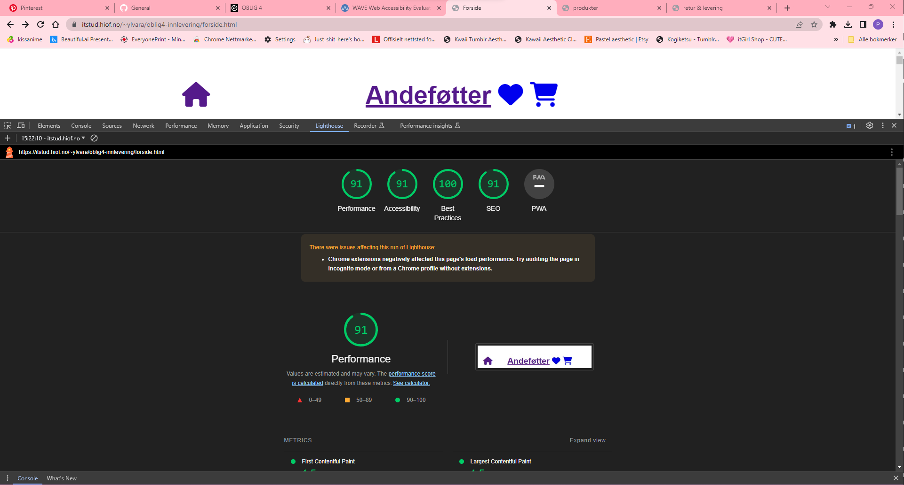
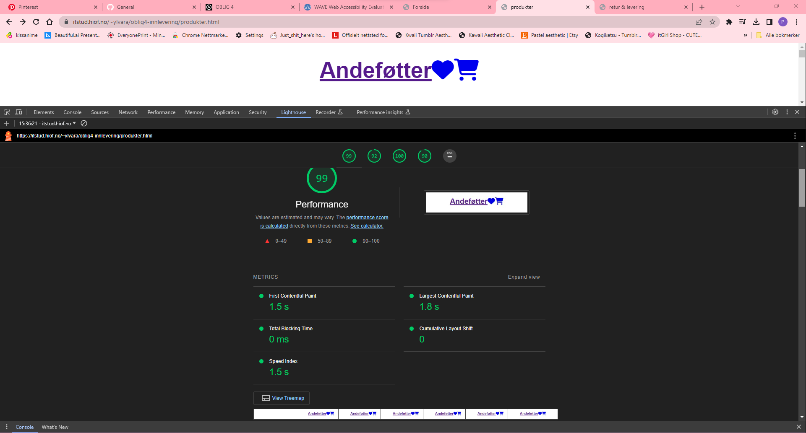
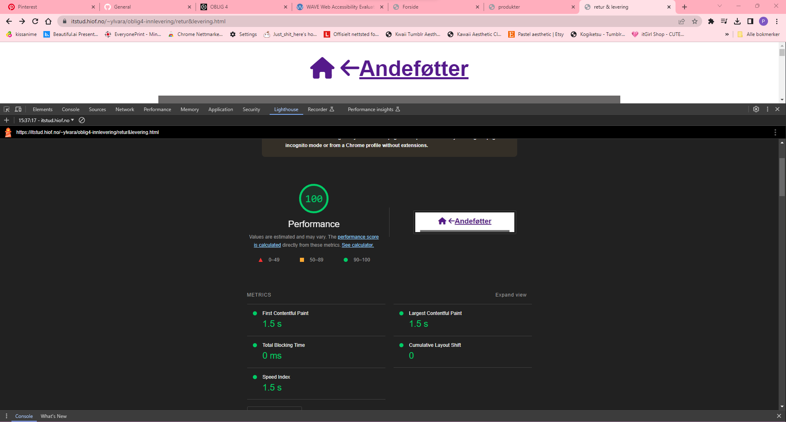
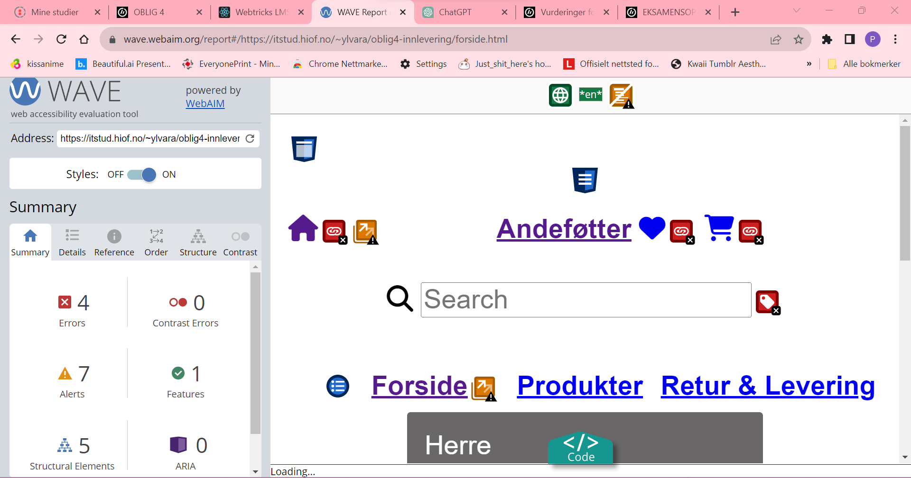
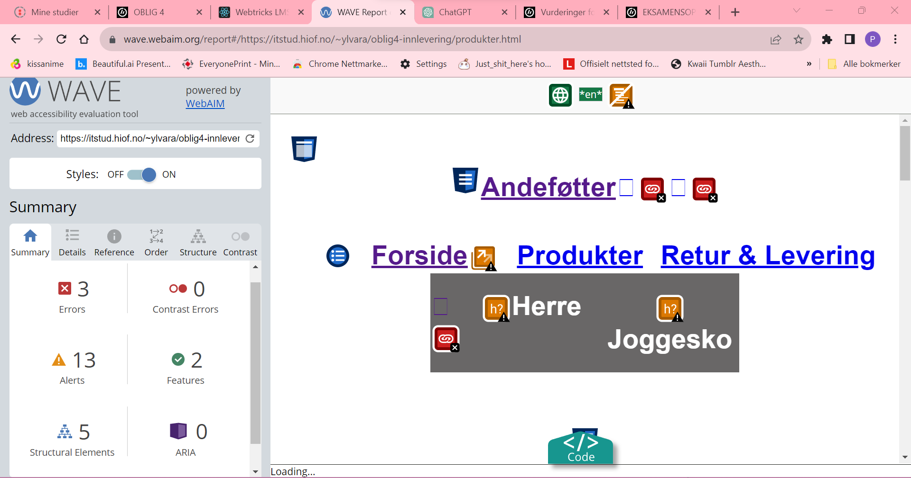
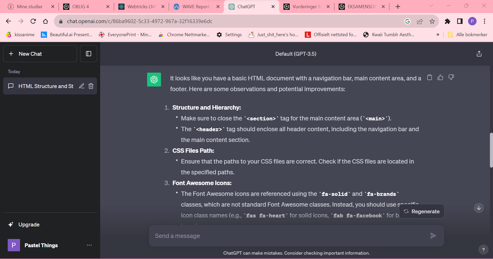
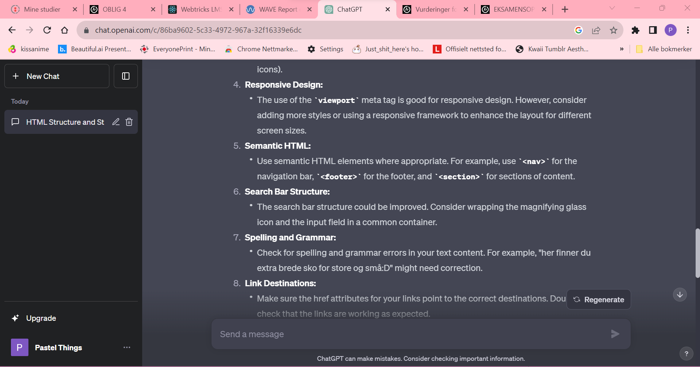
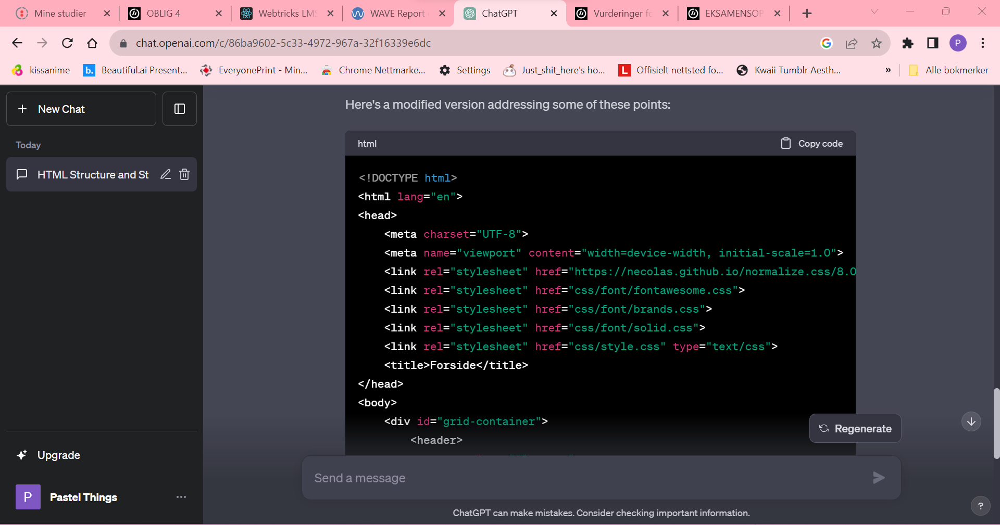
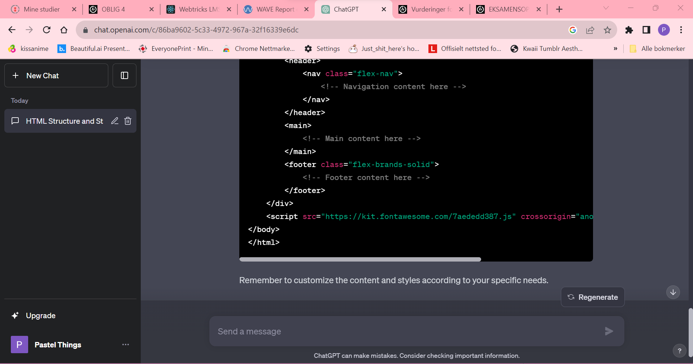

Nøkkelord
- Joggesko er et søkeord som passet til sko nettsiden jeg lagde, på grunn av google trends så ga den størst søker treff i hele norge og flertallet av nordmenn brukte joggesko ordet som søke ord når de søkte på joggesko og siden min side akkurat nå ahr kun joggesko så føler jeg det passer.
- Sko er et søkeord som passer til nettsiden siden det var et søkeord som er vedlig bredt brukt og er relevant for nettsiden så tenker jeg og bruke den
- Brede føtter er ikke et mye brukt søkeord men er forsatt brutk som et søkeord, og mest sannsynlig blitt brukt av folk som ser etter sko som er bredere en normalen. Og siden min nettside har extra fokus på folk med brede føtter og motto for butikkken er jo "her finner du extra brede sko for store og små:D" så føler jeg det passer. Og grunnen til at jeg ikke brukte extra brede sko var at det var ikke like mye søkt på som brede føtter.
| nettsiden før endring |
nettsiden etter endring |
| forside: Forsiden før endring der var ikke media queries ordentlig lagt til så den og cssen var satt opp på en måt som gjorde at nettsiden ikke ville legge seg i de tre grid kollonen jeg har lagd og holdt seg bare i en kollone |
forside og her vil det komme teskt så fort je har fikset alle eroror ogfeil på nettisden og da vil det komme opp en forkalring på hva jeg har gjort og endret |
| produktside: |
produktside |
| retur&levering |
retur&levering |
Dette er sectionen for SEO og UU:



her kommer en section for webaim og skal settes opp likt som SEO og UU med skjermbilder og tekslige forklaringer:



jeg må kopiere og lime inn al koden min inn i chat gpt og prompt den til å vurdere koden min utifra et UU og SEO perspektiv. også skal jeg be om spesefikke løsninger også skal jeg da dokumentere resultatene i analysen arket. men jeg skal ikke oppdatere koden min med det chat gpt anbefaler!




jeg skal lage en tabbel på denne siden med tre kolloner, en for chat gpt resultater, en for lighthouse resulater og en fro webaim resultater. I tabellen så skal jeg sammenligne resultatee av de tre. f.eks er det noe lighthouse reager på som chat gpt ikke reagerer på og vise versa?
| lighthouse |
webaim |
chatgpt |
| lighthouse resulater |
webaim resultater:
Sier jeg har totalt 8 errorer på min nettside, 4 på forside, 3 på produkter og 2 på retur og levering siden.
|
chatgpt resultater
|
| likheter
alle tre kommenterer på struktur og at strukturen mangler vel struktur.
|
ulikheter |
så skal jeg gjøre forbedrende tiltak for å øke sidens SEO og UU. så skla jeg ta skjermbilder underveis og skrive en liste over tiltak jeg har gjort for å forbedre. Å til slutt så skla jeg kjøre alle sidene utennom analysen arket på nettstedets igjennom de ulike verktøyene som lighthosue og webaim og dokumentere mine resulatter og om jeg fikke bedre score og hvotfro jeg eventuelt fikk bedre score?